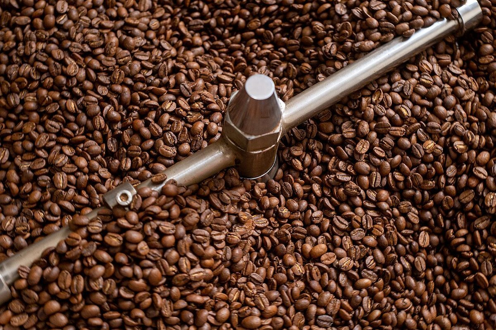
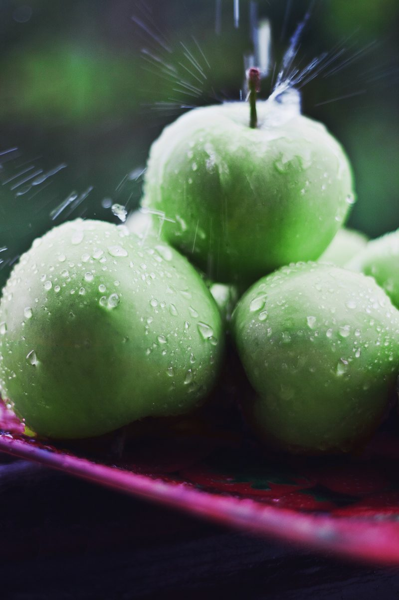
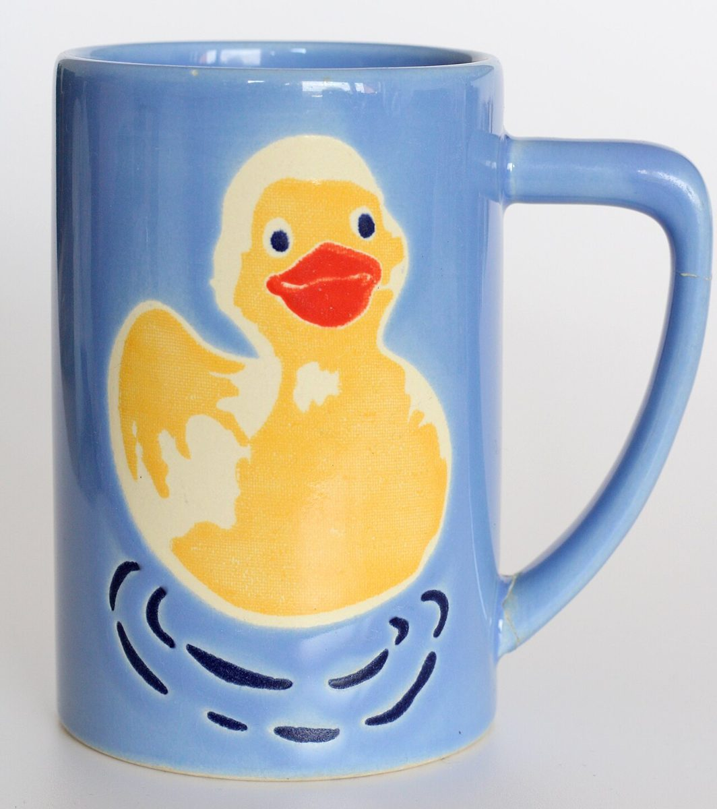
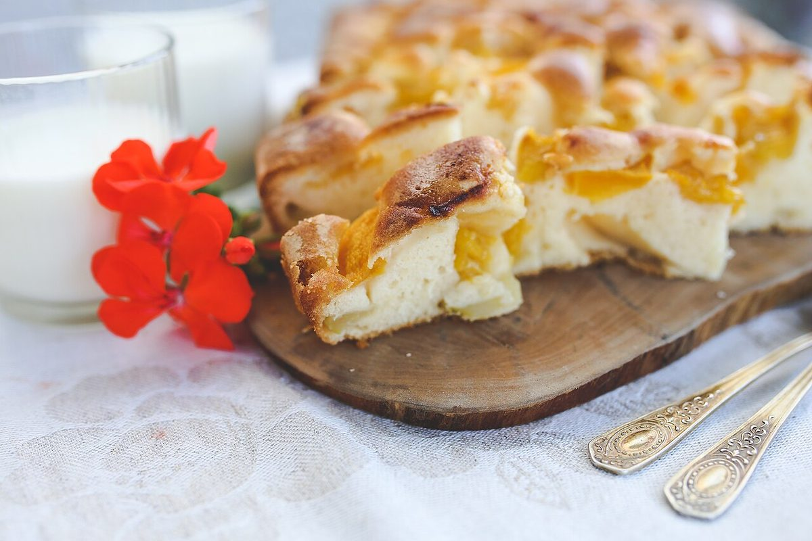

制作側の連想
「66」から思い浮かべた、六ペンスの唄
店名の由来は分かりません。制作側は屋号の「6」という数字から、英語圏の古い数え歌「六ペンスの唄(Sing a Song of Sixpence)」を連想しました。歌は、ポケットいっぱいの粒、数える部屋、パンとはちみつ、庭、鳥、パイと、いくつもの場面でできています。そこでこのサイトは、「6」と「6」を2枚の銀貨に見立て、六つの場面を1枚ずつ並べる作りにしています。お店の理念や由来とは無関係な、制作側の連想です。
六つの場面
銀貨を1枚ずつ、六つの場面に。
写真は三沢市やお店のものではありません。場面のイメージで選んだ、国外・撮影地不明のフリー素材です。お店で提供しているものを示すものでもありません。
- 1
ポケットの中の粒
いちばん目の詰まった「ひとつかみ」から。

- 2
数える部屋
山積みの粒を、ひとつずつ数えるように。

- 3
パンとはちみつ
テーブルに並ぶものの、いちばん素朴な組み合わせ。

- 4
庭先の実り
庭先に実るものの、いちばん瑞々しい一個から。

- 5
鳥たちの歌
歌のなかの鳥は、マグカップの絵のなかにも。

- 6
焼きあがったパイ
最後の一章は、切り分けた果物のパイ。

ご案内
お店のこと(確認できたものだけ)
| 所在地 | 〒033-0053 青森県三沢市春日台1丁目152-522 |
|---|---|
| 電話 | 080-2843-7808 |
| 営業時間 | 準備中 |
| 定休日 | 準備中 |
| ご予約 | 準備中 |
| 駐車場 | 準備中 |
| SNS | Instagram @cafe66misawa |